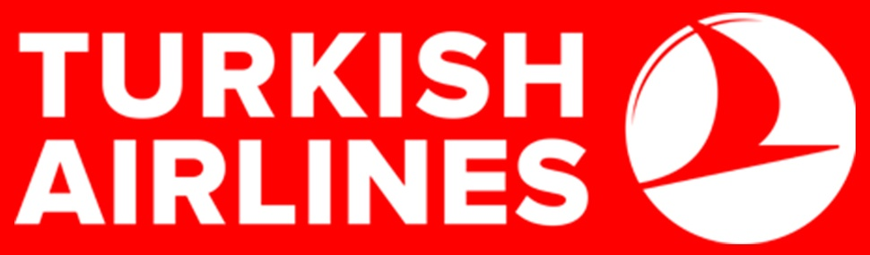
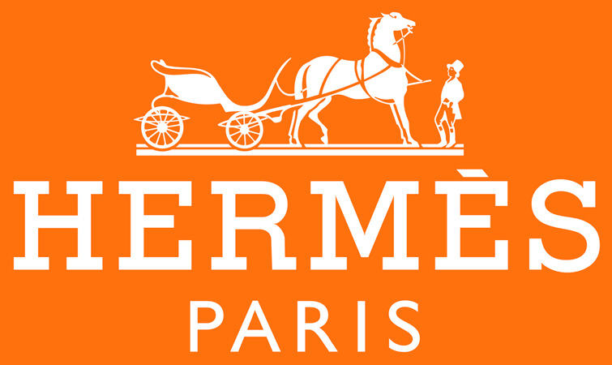
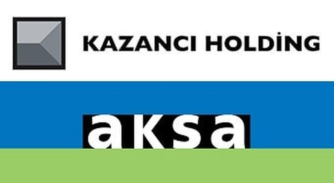
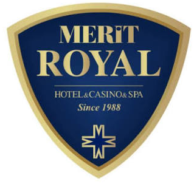
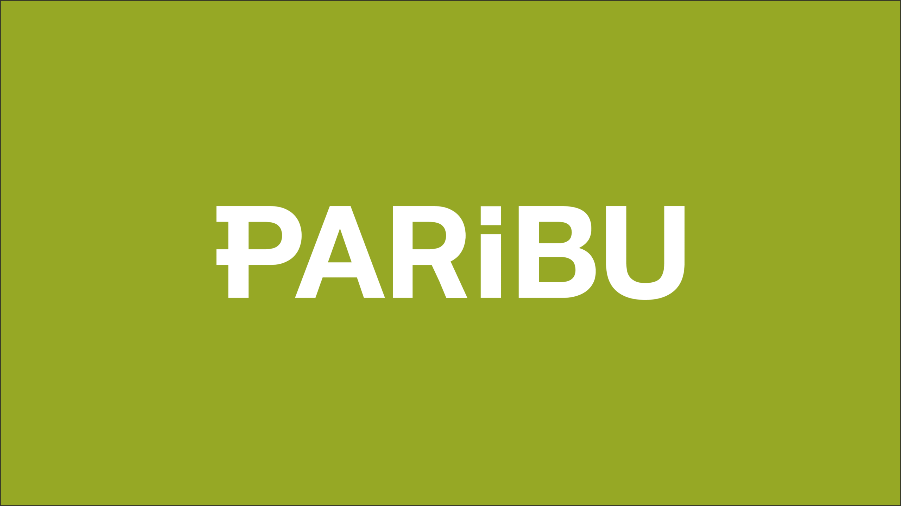

Güvenilirliğin Adresi
Yangın söndürme sistemlerinde güvenirliğin adresi
Sunucu odası, trafo merkezi, endüstriyel mutfak ve üretim tesislerinde gazlı söndürme, algılama ve periyodik bakım. Hacim hesabından devreye almaya kadar bütün süreci tek elden yürütüyoruz.





2011'den Bugüne Güven ve Mühendislik
Firmamız 2011 yılında kurulmuş olup iş tecrübesini teknolojiyle birleştirerek projelere değer katmaktadır. Hareket noktası Koşulsuz Müşteri Memnuniyeti olan Fenix Yangın, üstün hizmet anlayışıyla sektörde güvenin adresidir.
Tüm süreçlerimiz uluslararası sertifikasyonlara tabidir.
Kurumsal profil ve belgelerimiz →- Uygulanan standartlar
- NFPA 2001 · ISO 14520 · TS EN 15004
- Sistem ve hizmet kalemi
- 10
- Hizmet verilen sektör
- 7
- TSE-HYB hizmet yeterlilik
- ✓ Onaylı
- Florlu sera gazı sertifikası
- ✓ Onaylı
Neyi koruyoruz
Tesisin kullanımı, içindeki ekipman ve insan varlığı hangi söndürme yaklaşımının uygun olduğunu belirler.
Veri merkezi ve sunucu odası
Kesintisiz çalışma zorunluluğu. Kalıntı bırakmayan söndürme, çapraz bölgeli algılama ve oda sızdırmazlık testi birlikte projelendirilir.
Endüstriyel mutfak
DavlumbazTrafo ve enerji odası
CO₂ · Pano içiArşiv, müze ve kütüphane
Novec 1230Hastane
FM200 · Yangın algılamaFabrika ve üretim tesisi
CO₂ · Pano içiTelekom
FM200 · AerosolNe, nerede, neden
FM200
Sunucu odası, arşiv, kontrol odası Kalıntı bırakmadan söndürür, ekipmana zarar vermez insanlı ortamNovec 1230
Müze, arşiv, laboratuvar Geri dönüşü olmayan içerik su ve kalıntı kabul etmez insanlı ortamCO₂
Trafo, jeneratör, kablo galerisi Büyük ve çok bölgeli hacimlerde en ekonomik çözüm insansız hacimAerosol
Kabin, baz istasyonu, küçük hacim Borulama gerektirmez, dar hacimde kompakt çözüm ekipman bazlıDavlumbaz
Endüstriyel mutfak Ocak, fritöz ve egzoz kanalını ayrı nozullarla korur ekipman bazlıPano içi
Elektrik ve dağıtım panoları Yangını pano içinde, tesisi durdurmadan bastırır insanlı ortamLityum
Batarya odası, şarj alanı Termal kaçış riskine karşı erken müdahale ve soğutma özel senaryoYangın algılama
Tüm tesis Çapraz bölgeli kurgu yanlış tetiklenmeyi ve boşa deşarjı önler —Oda sızdırmazlık testi
Gazlı sistem kurulu her mahal Tutma süresi belgelenmeden sistem kabul edilemez door fanMühendislik süreci
her adımın çıktısı belgelenir- 01
Ölçüm ve tespit
Hacim ölçülür, mevcut algılama incelenir, kaçak noktaları not edilir.
- 02
Projelendirme
Sistem seçimi, tüp, nozul ve boru yerleşim çizimleri.
- 03
Hesaplama
Tasarım konsantrasyonu ve gaz miktarı NFPA 2001 uyumlu hesaplanır.
- 04
Kurulum
Montaj, panel ve damper/klima entegrasyonu.
- 05
Devreye alma
Door fan testi, tutma süresi ölçümü ve kabul raporu.
- 06
Bakım
Altı aylık kontrol, yıllık tartım, gaz dolumu.
Hacim hesaplayıcı
*FM200 HESAPLAMASIDIR
Gazlı söndürmede her şey tek bir sayıdan başlar: hacim. Ölçüleri girin, korunan hacim gerçek oranlarıyla çizilir.
Yükseltilmiş döşeme altı ve asma tavan üstü de korunacaksa onları da hacme eklemek gerekir. En sık atlanan nokta budur.
- Taban alanı
- 40,0 m²
- Gaz miktarı
- 90,0 kg
- Tüp sayısı
- 1
Ön hesap / ön değerlendirmedir. Kesin miktar; sıcaklık, tasarım konsantrasyonu ve NFPA 2001 akış hesabıyla belirlenir.
Mühendislik kapasitesi, ölçülebilir verilerle
Öne çıkan vaka kaydı eklendiğinde bu alanda proje adı, mahal tipi, hacim, gaz miktarı ve tutma süresi gösterilir. Tamamlanan uygulamaları teknik verileriyle inceleyin.
Karar öncesi okunacaklar
Door fan testi nedir, neden zorunlu?
rehber · oda sızdırmazlık testiFM200 ile Novec 1230 arasında nasıl seçim yapılır?
karşılaştırma · FM200 · Novec 1230Sunucu odasında dedektör yerleşiminin dört yaygın hatası
rehber · yangın algılamaDevralınan bir sistemin bakımı nasıl devreye alınır?
rehber · periyodik bakımİstanbul merkezli saha ekibi
Projelendirme ve devreye alma Bayrampaşa'daki merkezden yürütülür. Kurulum ve bakım hizmeti, proje kaydı bulunan bölgelerde verilmektedir.
- Merkez
- Bayrampaşa / İstanbul
- Bölge sayfaları
- gerçek projeye bağlı açılır
Harita kapsam iddiası taşımaz; noktalar bölge taksonomisinden gelir.
Tesisiniz için doğru sistemi birlikte belirleyelim
Mahal görülür, hacim ölçülür, sistem gerekçesiyle önerilir.